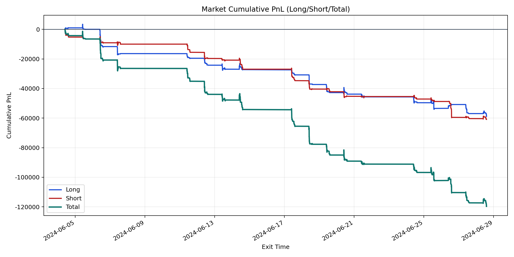
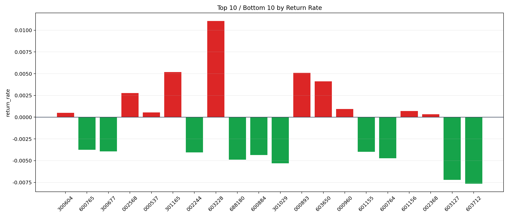

| repo_root | /home/haoranyou/data/output/dynamic_AUM_TAKER_index500 |
|---|---|
| period_months | 1 |
| period_label | 2024-06-04_to_2024-06-28 |
| start_time | 2024-06-04 09:46:07 |
| end_time | 2024-06-28 14:24:17 |
| n_trades | 4531 |
| n_symbols | 69 |
| total_pnl | -119645.56254999955 |
| long_total_pnl | -58732.24179999916 |
| short_total_pnl | -60913.32075000039 |
| total_entry_notional | 82709910.0 |
| long_entry_notional | 43139993.99999999 |
| short_entry_notional | 39569916.0 |
| total_return_rate | -0.0014465686463689725 |
| long_return_rate | -0.0013614337034909918 |
| short_return_rate | -0.001539384636297949 |
| top_symbols_by_return | ["603228", "301165", "000893", "603650", "002568", "000960", "601156", "000537", "300604", "002368"] |
| bottom_symbols_by_return | ["603712", "603127", "301029", "688180", "600764", "600884", "002244", "601155", "300677", "600765"] |

